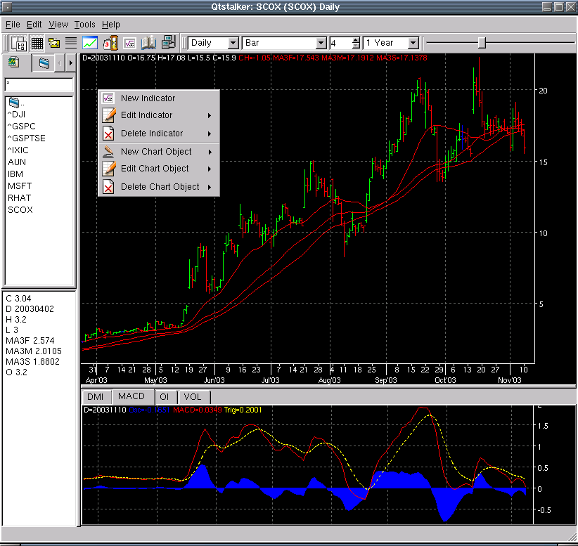

Main Screen
The figure below illustrates the what a typical Qtstalker app looks like.
The basic parts of the app going from top to bottom are:
- The title bar displays the current chart or group loaded.
- The menu bar, everything that can be done with Qtstalker can be done
using the menus.
- The tool bar area consists of 2 tool bars.
- Chart tool bar. Access to the most used charting functions like
chart types, bar spacing, grid etc.
- Navigation tool bar. This contains functions to navigate between
charts in a group, loading bar amounts etc.
- Main chart. This is the main plot for Open, High, Low, Close data
for every chart. Any indicators that apply to OHLC data will also be
plotted here. eg Bollinger Bands, MA's etc.
- Indicator chart. Any indicators that don't apply to the main chart
will be plotted here. eg. MACD, RSI etc. Note that the indicators located
here are tabbed.
Here is a shot of NASDAQ with a 3 plot MA and a MACD, OI and VOL at the
bottom.
